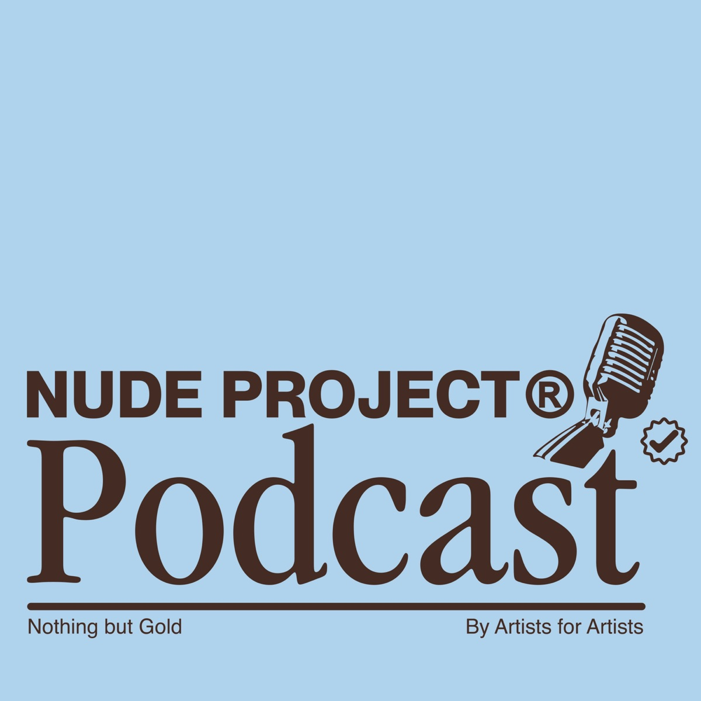

Nude Project: De rozar la Quiebra a superar los 70 Millones con El Ganso

De que va?
Bienvenidos a un nuevo episodio del podcast de Nude Project. Este domingo charlamos con Clemente Cebrián Co-fundador de El Ganso, la empresa de moda española de gran éxito que consiguió resurgir de la quiebra y alzar el vuelo otra vez.